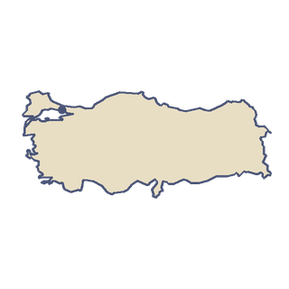

Türkiye
Türkiye joins two continents. Most of it lies in Asia, on the high Anatolian plateau, and a small part lies in Europe, across the Bosphorus and the Dardanelles. Its capital is Ankara, but Istanbul is its largest city.
“I'd float over Cappadocia in a balloon at sunrise.”
- Göbekli Tepe, a ring of carved stone pillars in south-east Türkiye, was built about 11,500 years ago, long before Stonehenge.
- In Cappadocia people carved homes and whole underground towns into soft volcanic rock. Hot-air balloons now rise over it at dawn.

The land
Türkiye has coasts on four seas: the Black Sea, the Aegean, the Mediterranean and the Sea of Marmara. The Sea of Marmara lies entirely within the country, between the Bosphorus at Istanbul and the Dardanelles, and it is often called the smallest sea in the world. In the far east, Mount Ararat rises to 5,137 metres, the highest point in the country. The Tigris and the Euphrates both begin in the mountains of eastern Anatolia.
Getting around
Istanbul's Tünel, a short underground railway from Karaköy up to Beyoğlu, opened on 17 January 1875. It is the second oldest underground railway in the world, after London's. Since 29 October 2013 the Marmaray line has run trains under the Bosphorus, through a tunnel 60 metres below sea level. High-speed trains have linked Ankara and Istanbul since 2014.
Food and crafts
In 2013 UNESCO added Turkish coffee to its list of the world's living heritage. The beans are ground very fine and heated slowly in a small pot until foam forms. It comes in a small cup with a glass of water. Türkiye drinks more tea per person than any other country, served in slim, tulip-shaped glasses made in Istanbul. In 2014 UNESCO also listed ebru, the art of marbling paper. Artists float colours on a tray of thickened water, swirl them into patterns and lift the pattern onto paper.
A new capital
Ankara became the capital on 13 October 1923, in place of Istanbul.
Fly over Türkiye.
-


 City 12 of 21
City 12 of 21Istanbul
The Galata Tower
“One shore was Europe and the other was Asia. The gulls flew between them all day.”
I'd take the same way across, only with paper wings. Its keepers are The Simit Gull and Karagöz.
The plane reaches Istanbul from Rome. Clear it and the map opens the way to Dubai and Athens.